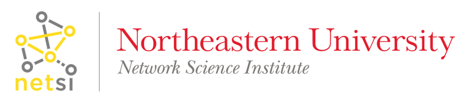
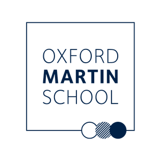

The Covid-19 map visualizes a deep and meticulous dataset that is freely accessible to anyone involved in coronavirus research; something that represents a completely new approach to how we collect data and make it readily available during an outbreak. The data changes the game in terms of how we respond to new global threats such as these.
Data
All data used to produce this map are exclusively collected from publicly available sources including government reports and news media.
Datasets and resources can be found in GitHub.
Participating Institutions




Collaborators
- Isha Berry, isha.berry@mail.utoronto.ca
- Thomas Brewer, Thomas.Brewer@childrens.harvard.edu
- John Brownstein, John.Brownstein@childrens.harvard.edu
- Emily Cohn, Emily.Cohn@childrens.harvard.edu
- Lauren Goodwin, Lauren.Goodwin@childrens.harvard.edu
- Bernardo Gutierrez, bernardo.gutierrez@zoo.ox.ac.uk
- Sarah Hill, sarah.hill@zoo.ox.ac.uk
- Erin Hulland, ehulland@uw.edu
- Moritz Kraemer, moritz.kraemer@zoo.ox.ac.uk
- Anastasia Lambrou, anastasia.lambrou@jhu.edu
- Sabrina Li, sabrina.li@ouce.ox.ac.uk
- Alyssa Loskill, aloskill@bu.edu
- Sumiko Mekaru, srmekaru@gmail.com
- Julia Morgan, morgaj5@uw.edu
- Katelynn O'Brien, katelynn.obrien@childrens.harvard.edu
- David Pigott, pigottdm@uw.edu
- Oliver Pybus, oliver.pybus@zoo.ox.ac.uk
- Sam Scarpino, s.scarpino@northeastern.edu
- Kara Sewalk, Kara.Sewalk@childrens.harvard.edu
- Lin Wang, lin.wang@pasteur.fr
- Jessie Wu, chiehhsi.wu@gmail.com
- Bo Xu, xu-b15@mails.tsinghua.edu.cn
- Alex Zarebski, aezarebski@gmail.com
News and Publications